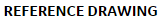

# Component Upload and Delete Testing. import os import sys import module_CommonImagesSet refrenceDrawingName = "AUTOMATION TEST REFRENCE DRAWING" uploadDialogRegion = Region(666,320,588,463) success = True # Open settings page. click(module_CommonImagesSet.settingsGearIcon) # Click on refrenceDrawing Library tab. click(module_CommonImagesSet.refrenceDrawingTab) # Click on refrenceDrawing add button. click(module_CommonImagesSet.addButton) match = find(Pattern().targetOffset(1,0)) # Title of the refrenceDrawing. click(match.getTarget().offset(-64,79)) type(refrenceDrawingName) # Description click(match.getTarget().offset(-64,150)) type("Automation Test") # Upload a sample refrenceDrawing file. # A. get the sample file path. commonImagePath = module_CommonImagesSet.mapTypeRoadImage.getFilename() commonDirectoryPath = os.path.dirname(commonImagePath) refrenceDWG = commonDirectoryPath + "\\" + refrenceDrawingName + ".DWG" Debug.log(refrenceDWG) # B. Type the path in File Open Dialog hit enter. click(module_CommonImagesSet.chooseFileButton) wait(1) type(refrenceDWG + Key.ENTER) # Click on upload button. click(uploadDialogRegion.find(module_CommonImagesSet.cancelUploadButton).getTarget().offset(90, 0)) wait(1) # Wait till the upload is complete. # Add button once again gets activated once upload is complete. #wait(module_CommonImagesSet.addButton, 40) wait(module_CommonImagesSet.addButton, 100) if not exists(module_CommonImagesSet.addButton): Debug.log("ERROR: Component loading either failed or took too much time.") success = False else: # Check if the drawing has been added successfully. titleColumn = find(module_CommonImagesSet.columnTitleHeader) click(titleColumn.getTarget().offset(0,34)) # Select the reference drawing type(refrenceDrawingName) newRefDrawingRow = if not exists (newRefDrawingRow): Debug.log("ERROR: refrenceDrawing is not found in the library after upload.") success = False else: Debug.log("INFO: refrenceDrawing is uploaded successfully.") # close admin page click(module_CommonImagesSet.closeButton) if success: Debug.log("TEST PASSED!!") else: Debug.log("TEST FAILED!!")